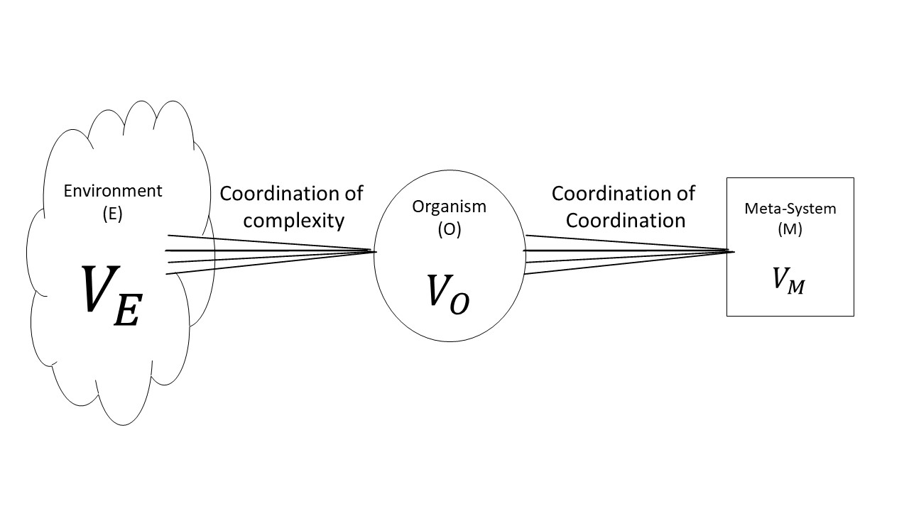
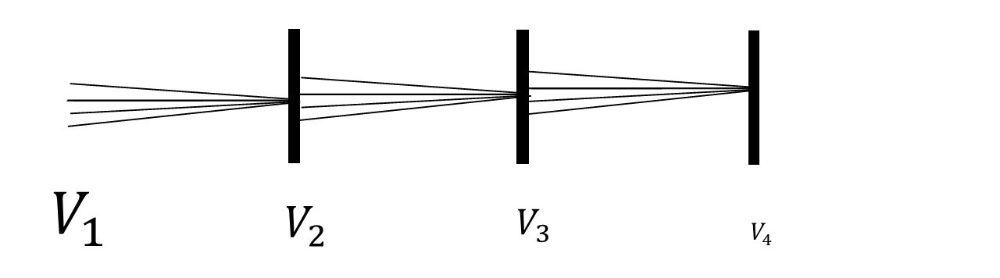
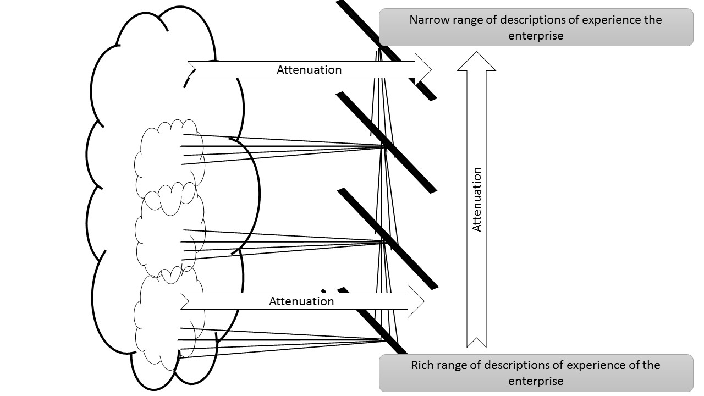

Междисциплинарность¶
47. Что вы изучаете?¶
КЛЮЧЕВЫЕ ВОПРОСЫ
Где граница между предметом, который вы изучаете, и другими предметами?
Являются ли предметы в университете реальными - действительно ли на рабочих местах люди делают то же самое?
Если вся теория, которую вы изучаете, на самом деле верна, выглядел бы мир по-другому, чем он есть на самом деле?
ПОЧЕМУ ЭТО ВАЖНО
Каждый из вас - студент, изучающий предмет в Школе экономики и менеджмента. Что такое «экономика»? Что такое «менеджмент»? На эти вопросы нет четких ответов. Все, что можно сказать, это то, что они являются «темами для обсуждения». Так это все «предмет»? … тема для обсуждения?
Но сколько обсуждений по теме вы действительно ведете в университете? В Университете предметы делятся на «темы», и оценки устанавливаются вокруг этих тем. Внезапно вы не можете спросить, что является большим «предметом», потому что у вас есть небольшие задачи, чтобы закончить, иначе вы не пройдете свой курс! И задавать слишком много трудных вопросов может стать очень разрушительным!
И всем нам говорят, что мы изучаем определенные темы, потому что это поможет нам получить работу. Это правда? Где в реальном мире есть «тема экономики»? Конечно, люди покупают и продают вещи, создают предприятия и т. д. Но никто не понимает это основное человеческое поведение.
48. Дисциплина образования¶
КЛЮЧЕВЫЕ ВОПРОСЫ
Почему образование часто бывает скучным?
Образование это предмет?
Необходимо ли поступать в университет когда существует столько возможностей для онлайн обучения?
ПОЧЕМУ ЭТО ВАЖНО
Существует много путаницы в том, что такое образование, и нет никакой последовательной теории.
Образование часто бывает скучным, потому что у нас плохая теория образования. Если бы у нас была лучшая теория, тогда обучение, возможно, было бы более гармоничным с тем, как работает человеческое сознание.
Скука сама по себе является реакцией на своего рода притеснение.
Тема самого образования не такая же, как темы физики, математики или химии. Социолог Эверетт Хьюс утверждал, что образование не является дисциплиной, а скорее «крупным комплексом искусств». Он объясняет, почему это не дисциплина:
«в части предложения единого порядка явлений, которые при систематическом наблюдении и / или манипулировании приводят к созданию целостной теории. В этом отношении образование подобно другим великим практическим искусствам - забота о больном, соблюдение порядка и распределение правосудия. Все они, однако, порождают множество дисциплин и, в свою очередь, используют многие из их результатов. Эти искусства являются источниками человеческого любопытства; они также являются великими потребителями лучших интеллектуальных и научных усилий человека. Более того, ни одно из этих искусств никогда полностью не контролируется человеческой волей, волей одного человека или какой-либо небольшой группы людей или даже общества в целом через свои инструменты. Однако контроль над этими искусствами востребован во всех обществах. Способ практиковать их - это тот самый материал столкновения воли и интересов; таким образом, вопрос политики »( Hughes 1985)
Различие Хьюса между «дисциплиной» и «комплексом искусств» полезно в том смысле, что оно заставляет нас спросить, существует ли «основа последовательной теории» об образовании
В образовании то, что принято в качестве «теории», часто является объединением идей, взятых из разных источников, и используется риторическим способом для защиты конкретных вмешательств или практик.
49. Различия¶
КЛЮЧЕВЫЕ ВОПРОСЫ
Что такое различия?
Как одно отличие связано с другим?
ПОЧЕМУ ЭТО ВАЖНО
Умение проводить различия между разными предметами всегда является первым (и существенным) шагом в возможности изучить что-то. Дифференцировать можно биологические виды, художественные формы, философские позиции, времена суток, цвета, звуки и движения. Образование питается различиями. Изучение образования - это изучение способов определения различий и динамики их взаимодействия.
Различие - это граница. Оно ограничивает один набор вещей, принадлежащих к одной группе, и другой набор вещей, принадлежащих к другой. Проводя различие красных бабочек, вырисовывается линия и устанавливаются критерии для определения того, относится ли конкретный объект к стороне линии, где говорится «красные бабочки», а все остальные - не красная бабочка. Различие красных бабочек отмечено ограничением того, что не соответствует критериям (другим различиям) для красной бабочки. Различие - это выбор ограничения. Выбор, однако, сам сдерживается другими вещами: например, нормы, ценности, институты, образование и индивидуальные ожидания.
Каждое различие существует в пределах различий другого уровня. Мы можем сделать различие в отношении бабочек, но где различия в научных или эстетических нормах, ценностях и ожиданиях, в которых существуют различия бабочек? Чтобы исследовать способность разграничения как процесс, мы должны осознать обе стороны различия, чтобы увидеть сложные структуры иерархий, которые могли бы работать при установлении даже самых простых суждений о реальности.
В образовании мы проводим различие, подобное тому, которое пытается сделать Хьюс. Если мы хотим сказать, что образование - это x, y или z, то различие рисуется с помощью x, y или z в поле, и все, что не является x находится вне этого поля. Тогда мы можем сказать, что все, кроме x, ограничивает определение х. Различия становятся ощутимыми.
Проще говоря, различие Хьюса между образованием как комплексом искусств и тем, что он называет «дисциплинами», можно сделать так, как показано на рисунке 5.1.
Изображение образования таким образом вызывает вопросы. Стрелки между дисциплин на диаграмме показывают связь, которая неясна в описании Хьюза. Математика и физика имеют отношение к образованию. Образование формирует то, что они есть: так не должны ли они быть в рамке образования? Но и математика, и физика имеют отношение друг к другу: математические методы, такие как исчисление, полученное из новых теорий в физике и астрономических наблюдениях. Таким образом, эта диаграмма не очень удовлетворительна, но отсутствие ясности в описании Хьюса становится очевидным при попытке нарисовать его как диаграмму.
50. Является ли категория процессом?¶
КЛЮЧЕВЫЕ ВОПРОСЫ
Считается ли различие «кота», «стола» и «математики» фиксированным или результатом непрерывного процесса?
Каков процесс преобразования аналогового сигнала в цифровой?
Каков процесс, который поддерживает границу между чем-либо?
Если граница между одним предметом и другим изменяется, что происходит с другими границами?
Как общество меняется со временем?
ПОЧЕМУ ЭТО ВАЖНО
Если существует множество возможных различий в отношении «математики», «образования», «больниц» или «стульев», как мы поддерживаем относительно стабильные различия в обществе? Должен быть процесс, который отвечает за поддержание связанного и согласованного набора различий, вокруг которых мы координируем нашу социальную жизнь, нашу систему образования, нашу научную практику и т. д. Кибернетика дает название имени процессу сохранения различия: это трансдукция.
В инженерии трансдукция - это процесс принятия одной формы энергии и превращения ее в другую - как электрический трансформатор или теплообменник. В этих примерах и во всех других примерах трансдукции, какие результаты являются границей или различием.
Процесс трансдукции работает с обеих сторон разграничения. Признавая, что различия поддерживаются процессом, следует признать, что процесс может измениться - и изменение процесса разграничения на одном уровне может привести к изменениям процесса разграничения на многих других уровнях. Чтобы изменить социальную систему - или даже любую другую систему - мы должны «настроить преобразователи»!
Все различия являются результатом процессов трансдукции.
Общества меняются, когда их различия о себе меняются, и это происходит, когда меняется структура их трансдукций.
51. Внутренняя и внешняя сторона экономики¶
КЛЮЧЕВЫЕ ВОПРОСЫ
Каковы внутренние экономические соображения, которые должны учитывать предприятия?
Каковы внешние соображения, которые должны учитывать предприятия?
ПОЧЕМУ ЭТО ВАЖНО
Усиление экономического потенциала предприятия невозможно без улучшения процесса планирования, отражающего процесс внедрения инноваций. Это внутренние процессы.
Роль целевого количественного критерия в этом случае может быть выполнена индикатором инвестиционной активности (результат денежного потока). Также важно сбалансировать суммы положительных и отрицательных денежных потоков, проанализировать взаимосвязь между балансом денежных потоков текущих операций и чистой прибылью (убытком).
Динамика изменений в прибыли должна соответствовать изменению сбалансированных денежных потоков от текущей деятельности. Чтобы максимизировать прибыль, необходимо минимизировать материальные затраты и обеспечить рост производительности труда за счет снижения трудоемкости на основе инноваций.
Финансовая стратегия компании должна быть разработана с учетом риска неплатежей, всплесков инфляции и других обстоятельств непреодолимой силы.
Финансовый контроль необходим для своевременного выявления внутренних резервов, повышения рентабельности экономики, увеличения экономии денежных средств на предприятии. Многие из них требуют рассмотрения внешних факторов.
Использование интегрированной автоматизированной системы управления для формирования финансовой отчетности на предприятии позволит обрабатывать информационную базу и регулярно получать оперативный отчет о финансовом состоянии компании, это станет инструментом для диагностики и постоянного мониторинга финансовой ситуации.
Использование современных информационных технологий обеспечит точность и согласованность действий всех сотрудников, в том числе вовлеченных в процесс управления, укрепление внутреннего финансового контроля на предприятии, агрегирование информации, основанной на обработке показателей разных уровней планирования.
В результате возможна адекватная и своевременная оценка рисков, минимизация издержек и эффективная эксплуатация предприятия с целью укрепления его экономического потенциала в ситуации неопределенных рыночных условий.
52. Внутренняя и внешняя сторона туризма¶
КЛЮЧЕВЫЕ ВОПРОСЫ
Что может относиться к внутренней и внешней стороне туризма?
Какова функция туристической компании в поддержании отношений между внутренней и внешней стороной среди своих клиентов и подрядчиков?
Что такое досуг или отдых?
ПОЧЕМУ ЭТО ВАЖНО
Туризм переплетается с культурой, экономикой, экологией и управлением
Туристические ресурсы делятся на культурные, природные, социально-культурные объекты. Следует отметить, что именно культурные факторы / культура действовали как движущая сила развития туризма.
В эпоху глобализации туризм выступает в качестве связующего звена в межкультурном развитии и взаимопонимании между народами.
Туризм как сфера отдыха - во взаимосвязи с окружающей средой. Рекреационные зоны очень хрупкие, уязвимые, ресурсы исчерпаны.
Иногда спонтанное, неконтролируемое развитие туризма создает ряд экологических проблем: разрушение природных ландшафтов, изменение компонентов природной среды и т. д.
Соответственно, формирование экологической осведомленности среди профессионалов в области туризма и понимание соответствующих научных отраслей необходимо
Туризм в качестве сферы экономики является активным источником пополнения доходной части бюджетов разных уровней, оказывает многократное влияние на смежные отрасли.
В туристической профессиональной деятельности ведущую роль занимает менеджмент. Менеджмент в области туризма имеет особый характер, поскольку туристический продукт - это, прежде всего, сервисный продукт, который требует системного подхода к управлению, который ориентирован на развитие человеческого ресурса предприятия и является «острым» для интересов клиента.
53. Метаязык¶
КЛЮЧЕВЫЕ ВОПРОСЫ
Когда вы говорите о своей манере говорить?
Почему может быть полезно иметь согласованный способ говорить о разговоре?
Насколько язык о системах полезен?
ПОЧЕМУ ЭТО ВАЖНО
То, что было описано как процесс отстаивания наборов различий, имеет более формальное описание в кибернетике, разработанной Стаффордом Биром.
Бир понимал, что фундаментальные проблемы институтов касаются того, как они проводят различия в себе: модель жизнеспособной системы представляет собой своего рода шаблон, по которому учреждения и предприятия могут проектировать свои текущие операции и размышлять о новых способах организации себя.
Бир работал в Чили в 1971 году с Сальвадором Альенде по созданию технологически управляемого социалистического государства.
Различие между организмом и его окружающей средой связано с процессом затухания окружающей среды организма и усилением затухания организма путем производства его многочисленных описаний. Любой организм должен каким-то образом координировать, какие части его операций ослабляют окружающую среду. Это означает, что в составе организма должна быть функция более высокого уровня, которая исследует функцию операций организма и пытается их координировать.
Любой организм должен как-то координировать работу тех частей системы, которые истощают окружающую среду. Это означает, что как часть организма у нее должна быть функция высокого порядка, которая изучает операционную функцию организма и пытается координировать ее.
54. Организм и окружающая среда¶
КЛЮЧЕВЫЕ ВОПРОСЫ
Каковы отношения между организмом и его окружающей средой?
Как организм адаптируется к выживанию в его окружающей средой?
ПОЧЕМУ ЭТО ВАЖНО
Организмы - это сложные системы, но их окружающая среда более сложна. Их сложность может рассматриваться, как множество, и представлена как Vо, тогда как сложность среды Vе
Чтобы выжить в окружающей среде, организм должен, прежде всего, ослабить сложность окружающей среды и усилить свою собственную сложность.
Однако если организм просто реагирует на окружающую среду, он не сможет развиваться. Он также нуждается в метасистеме, которая способна управлять адаптацией организма, наблюдая, как организм адаптируется.
{width=”\textwidth”}
55. Рекурсия¶
КЛЮЧЕВЫЕ ВОПРОСЫ
Почему образы содержат образы, содержащие образы?
ПОЧЕМУ ЭТО ВАЖНО
Каждый уровень трансдукции приводит к ослаблению уровня ниже. Каждый уровень трансдукции представляет собой несколько описаний себя до уровня выше. Центральная проблема здесь в том, что ослабления по необходимости всегда являются приблизительными.
Каждый уровень напрямую связан с уровнем ниже, представляя несколько описаний ослабления, которое он производит. Этот процесс создания множественных описаний ослабления можно рассматривать как «усиление».
Результатом комбинированного процесса усиления и затухания является то, что существует ошибка между множественными описаниями мира и его ослабленными описаниями. Основная проблема заключается в том, что делать с ошибкой.
Ошибки проявляются во множестве описаний, которые каждый уровень представляет на уровень выше. Эти множественные описания аналогичным образом ослабляются и усиливаются и аналогичным образом вызывают ошибку на следующем уровне. И так все продолжается. {width=”\columnwidth”} Два измерения затухания в организации: снизу вверх (по вертикали) и от окружающей среды до индивидуальной (горизонтальной)
56. УУсиление и ослабление иерархии и организационной структуры¶
КЛЮЧЕВЫЕ ВОПРОСЫ
Почему иерархия является плохой идеей в условиях неопределенность окружающей среды?
ПОЧЕМУ ЭТО ВАЖНО
Все иерархии работают по принципу затухания: затухание от окружающей среды к системе и затухание снизу вверх.
Начальник не может знать всю информацию о деталях происходящего в окружающей среде или на местном уровне: они должны работать с абстрактным представлением реальности.
В очень неопределенной и сложной среде это означает, что иерархия не способна усвоить сложность своей среды или ее работы, и поэтому ее самоадаптация не работает эффективно. Вместо этого инстинкт иерархий состоит в том, чтобы защитить себя, став более авторитарным.
{width=”\columnwidth”}
Существуют подходы к организации, которые позволяют избежать проблем иерархии. Несмотря на то, что любая система должна управлять любой другой системой большей сложности, чем сама, рекурсивное разграничение может создать динамически адаптивную систему, операции которой в ее среде постоянно адаптируются в соответствии с разницей между аттенюациями и фактическим поведением среды
В то время как рекурсия является ключом к эффективному адаптивному поведению, и каждый уровень трансдукции имеет ту же структуру, что и каждый другой, каждый уровень рекурсии ослабляет и усиливает различия. Из-за этого рекурсивные структуры трансдукции приводят к тому, что можно идентифицировать как различия в функции на разных уровнях рекурсии.
Этот второй момент важен при рассмотрении учебных заведений. Окружающая среда преподавателей отличается от окружающей среды учащихся, или от окружающей среды бухгалтеров учреждения, или его менеджеров. Каждый функциональный блок делает различные ослабления и усиления на основе информации, представленной ему на более низких уровнях, и представляет различную информацию для высоких уровней трансдукции.
57. предвосхищение¶
КЛЮЧЕВЫЕ ВОПРОСЫ
Что такое ожидание?
Как система построит модель себя?
Как ожидание связано с сознанием?
ПОЧЕМУ ЭТО ВАЖНО
Живые системы ожидают изменения в их среде. Если они этого не сделают, они не смогут реагировать на угрозы.
Биологи, включая Роберта Розена (R. Rosen, J. Rosen, Kineman 2012) и математиков, включая Даниэля Дюбуа (Dubois, 1998), изучили явления, описывающие сложную динамическую систему, в соответствии с которой ожидаемое зависит от одновременной обработки:
Что произошло в прошлом
модель происходящего
размышления о возможных моделях того, что может произойти, и что может быть возможно.
Дюбуа разработал этот процесс, используя три уравнения простых уравнений, показывающих, как динамическое взаимодействие между тем, что он называет «рекурсивным» уравнением (1), «инкурсивным» уравнением (2) и «гиперинкурсивным» уравнением (3), создает интерференционную картину, отображает самоподобие на рекурсивных уровнях .
 {width=”60%”}
{width=”60%”}Сознание может действовать согласно этим принципам, что делает нас «рефлексивными системами». Такая система, как «сознательная» система, постоянно и одновременно обрабатывала бы то, что происходит вокруг нас (1), думая о том, почему происходит то, что происходит (2), и рассматривает и оценивает альтернативные объяснения того, почему все происходит, и что может случиться следующим (3).
58. Фракталы и симметрия¶
КЛЮЧЕВЫЕ ВОПРОСЫ
Какова связь между жизненными процессами и математическими процессами, которые создают образы, выглядящие как живые вещи?
Является ли природа математической?
Является ли природа симметричной?
ПОЧЕМУ ЭТО ВАЖНО
Фрактал - это образ, который отображает сходство в своей структуре на разных уровнях. Общие фракталы включают множество Мандельброта и множество Жюлиа.
Фракталы выглядят как живые системы, а многие живые системы, такие как еловые шишки, листья папоротника и морские раковины, представляют собой фрактальные узоры.
Математика упреждающих систем Даниеля Дюбуа создает самоподобные структуры, которые также выглядят как фракталы {width=”\textwidth”}
Общим фактором между этими разными образцами является симметрия на разных уровнях. В равной степени симметрия, или, скорее, нарушенная симметрия, поддерживает существующие теории возникновения структуры во Вселенной
В физике структура вещества на самом базовом уровне предлагается как результат процесса ослабления симметрии
По-видимому, существует связь между нарушением симметрии физики и нарушением симметрии биологии, которая была установлена как биологами, физиками, так и математиками.
Некоторые, в том числе Дэвид Бом и Карл Прибрам (Bohm, 2002), даже предположили, что процессы нарушения симметрии - это общая связь, связывающая физику с биологией и с сознанием
59. Творчество в образовании¶
КЛЮЧЕВЫЕ ВОПРОСЫ
Каковы преимущества развитого творческого мышления?
ПОЧЕМУ ЭТО ВАЖНО
Творчество:
меняет отношение к жизни
позволяет отказаться от пассивного отношения к нему
позволяет вам стать силой, которая вызывает изменения и формирует ваше будущее
обеспечивает быстрое мышление и гибкость мышления;
способствует широте мышления, знаний, прикладных методов, потому что при решении различных проблем вы не фокусируетесь только на один момент и способ решения;
уменьшает затраты времени и материалов, необходимые для решения проблемы; позволяет вам познать гармонию в себе и в окружающем вас мире;
обогащает внутренний и внешний мир человека;
учит быть в настоящем и одновременно знать и чувствовать прошлое и будущее; обеспечивает внутренний рост;
наполняет жизнь радостью, смыслом, целью; делает жизнь яркой, творческой;
креативность не может быть безвкусной, безразличной, нигилистической;
помогает быть более спокойным и настойчивым в решении проблем;
повышает вашу уверенность в правильности ваших идей;
помогает лучше понять мысли других людей и, следовательно, лучше ориентироваться в мире людей;
помогает отвлечься от стереотипов мышления;
увеличивает удовольствие, которое вы получаете от решения проблем, так называемое «творческое удовлетворение».
60. Системы и сложность¶
КЛЮЧЕВЫЕ ВОПРОСЫ
Как разные предметы соотносятся друг с другом?
Что такое сложность?
Что такое простота?
ПОЧЕМУ ЭТО ВАЖНО
На этом этапе нам должно быть ясно, как определить «систему». Наш первый импульс заключается в том, чтобы указать на маятник и сказать, что система - это то, что мы видим. Однако этот метод имеет фундаментальный недостаток: каждый материальный объект содержит как минимум бесконечность переменных и, следовательно, возможных систем.
Реальный маятник, например, имеет не только длину и положение; он также имеет массу, температуру, электропроводность, кристаллическую структуру, химические примеси, некоторую радиоактивность, скорость, отражающую способность, прочность на растяжение, поверхностную пленку влаги, бактериальное загрязнение, оптическое поглощение, эластичность, форму, удельный вес и так далее. Любое предположение о том, что мы должны изучать все факты, нереально, и на самом деле попытка никогда не предпринималась. Необходимо то, что мы должны выбирать и изучать факты, которые имеют отношение к некоторым основным интересам, которые уже даны … Система теперь означает не вещь, а список переменных. (W. R. Ashby, 1956)
Слово является сложным, поскольку оно может быть применено к системам, имеет много возможных значений, и я должен сначала прояснить его единое понимание. Нет очевидного или первостепенного значения, поскольку, хотя все согласны с тем, что мозг сложный, а велосипед простой, нужно также понимать, что для мясника мозг овец прост, а велосипед, если он изучен исчерпывающе, может представлять очень большое количество существенных деталей.
Без дальнейших оправданий в этой статье я буду следовать интерпретации сложности, которую я использовал и нашел подходящей в течение примерно десяти лет. Я буду измерять степень сложности по количеству информации, необходимой для описания жизненно важной системы.
Для нейрофизиолога мозг, как волнистость волокон, безусловно сложный; и в равной степени передача подробного описания этого потребует много времени. Для мясника мозг прост, поскольку он должен отличать его от примерно тридцати других видов мяса, поэтому задействовано не более log2 30, то есть около пяти бит. Этот метод, по общему признанию, делает системную сложность чисто относительной для данного наблюдателя; он отвергает попытку измерить абсолютную или внутреннюю сложность; но это признание сложности, как что-либо в глазах смотрящего, является, на мой взгляд, единственным работоспособным способом измерения сложности. (Ashby, 1973 - «Некоторые особенности сложных систем», Кибернетическая медицина, том 9, № 1)
61. Контроль¶
КЛЮЧЕВЫЕ ВОПРОСЫ
Контроль это хороший инструмент или плохой?
Как мы узнаем разницу между тем, что находится под контролем, и тем, что вышло из под контроля?
Как может что-то вне контроля быть под контролем?
ПОЧЕМУ ЭТО ВАЖНО
Кибернетика изначально определялась как «искусство и наука контроля в человеке и машине» (N. Wiener 2013). Однако мы говорили о том, что разговор - это танец, и что танец может либо течь, либо он может сломаться - иногда требуется, чтобы учитель пересмотрел свой подход. Этот вопрос о танцах и разговорах точно такой же, как проблема контроля. К сожалению, однако, слово «контроль» имеет некоторые неприятные ассоциации с принуждением, потерю свободной воли, авторитаризм и т. д. Но все эти случаи характеризуются отсутствием контроля. Поэтому нам требуется более точное определение контроля.
Стаффорд Бир объясняет кибернетическое чувство контроля следующим образом: «Контроль - это атрибут системы. Это слово не используется в способе, которым его может использовать либо администратор офиса, либо игрок; оно используется как название для связи»(S. Beer 1965)
Контроль можно рассматривать в контексте двух танцующих людей. Контроль просто ссылается на ясную связь между танцорами, чьи ходы дополняют друг друга и которые участвует во всей системе, которая проявляет согласованность в своем поведении. Контроль проявляется у двух человек, ведущих беседу, в которой они оба глубоко связаны и вовлечены. Это также проявляется в игре в футбол между двумя командами или между двумя людьми, играющими в шахматы.
Кибернетика была первоначально разработана в 1940-х годах как подход к изучению динамики механических систем управления. Проблема механического контроля Норберта Винера заключалась в том, как снимать входящие воздушные судна. Механическая проблема связана с обратной связью: позиция и траектория входящего объекта изменились, и, как это было сделано, необходимо было скорректировать калибровку контрмер. Входящий самолет и система мишеней для ракеты были вовлечены в танец.
62. Наука и жизнь¶
КЛЮЧЕВЫЕ ВОПРОСЫ
Как наука понимает жизнь?
Как искусство может помочь нам понять жизнь?
В описании чего наука не сильна?
ПОЧЕМУ ЭТО ВАЖНО
Все процессы происходят со временем. В то время как мир постоянно движется вперед, часы продолжают тикать, второй закон термодинамики постепенно видит увеличение беспорядка во Вселенной, жизнь создает новый порядок.
Биологические процессы работают против второго закона термодинамики, создавая порядок у растений и животных, где метаболизм производит порядок за счет потребления пищи, а мысль производит порядок в нашем мозгу. Шредингер утверждал, что это фундаментальный принцип жизненных процессов: они работают против нарастающего беспорядка (или энтропии). Жизнь о Негэнтропии:
Существенным в метаболизме является то, что организму удается освободиться от всей энтропии, которую он не может продлить, пока жив. (Schrodinger 2012)
Распространяющийся опыт таких искусств, как музыка, является хорошим примером динамического напряжения между энтропией и негэнтропией и имеет много общего с опытом обучения. Кино, музыка и театр - это формы выражения, которые отображают два взаимосвязанных измерения, которые также являются общими для всех процессов обучения. Существует измерение структуры вещей, которые происходят в любой момент, и есть измерение вещей, которые разворачиваются с течением времени.
Наука и искусство смотрят на мир по-разному. Как информация (негэнтропия), так и время являются фундаментальными проблемами в науке, что требует описания художников для углубления понимания
В чем разница между тем, как ученый смотрит на природу и как художник смотрит на природу?
Какова ценность наличия нескольких полных описаний?
В чем риск наличия только научного описания чего-либо?